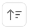

Report Builder
Report Builder is only available on advertiser or agency nodes.
The objective of this screen is to allow you to create reports that can meet many needs. There are lots of options to filter, group, sort the data, as well as select which columns you want to see.
How to Start
To begin creating your report, select the New Report button at the top-right of the Report Builder screen.
Report Period
In this section of the report you will need to choose the date range for the data that you want to analyze.
Group By Options
Using Group By options to determine how the data will be aggregated. For example, if you are interested in running a report comparing data across different SSPs, you would want to group the data by SSP. You can use more than one Group By option, but be careful not to use too many or it may cause the output to be too big to be processed.
The following is a list of the options available for you to use to group the data, and a description of what they mean.
| Name | Description |
|---|---|
| Ad Format | The size of the ads (for example 728 x 90) |
| Ad Group ID | The ID of the Ad Group, also known in DV360 as the Line Item ID |
| Ad Group Name. | The name of the Ad Group, also known in DV360 as the Line Item Name. |
| Campaign ID | The Campaign IDs from the DSP |
| Creative Type | The type of creative that is required for the impression, including Banner, Video, Audio, and Other/Unknown. |
| Day | Group the data by day to look at daily trends. |
| Deal | Impressions that were purchased as part of a deal (PMP) and those that were not. |
| Domain/App ID | The domains or app Ids that the impressions were served on. |
| DSP Abbreviated Name | The DSP names, such as Google DV360. |
| Insertion Order ID | The ID of the insertion order. |
| Matched Fold Position | The locations of the ad on the screen relative to the fold (Above, Below, or Unknown) |
| Month | Group the data by month to look at monthly trends. |
| Seller ID | The sellers account ID that a buyer will transact with (typically the SSPs' account with a publisher or seller). |
| SSP Name | The names of the Supply Side Platforms. |
| Week | Group the data by week to look at weekly trends. |
Columns
In this section you can choose which columns you want to appear in your report.
You can manually select which columns to include in your report by clicking on the Select columns option to the right of the Columns control. Since there are a lot of columns to select from (over 85), to make this selection process easier we have grouped them into categories. These categories appear just below the “Select columns* field and begin with All, Delivery, TrueKPI Framework, etc. You can select one or more of these categories. After you select them you can select the Columns menu to see which specific columns are included. Here is a brief description of the types of data included in each column category.
| Name | Description |
|---|---|
| All | This includes all available columns. |
| Delivery | This includes ad spend and impression columns |
| TrueKPI Framework | This includes all ad spend and impressions columns that have “True” in the column name (such as TrueImpressions and TrueAd Spend) |
| Supply Chain Health | This includes the columns that have unique counts (including Domains & Apps, Seller IDs, and SSPs), along with ad spend and impressions with matched publisher domain or app id and %. |
| Transaction Costs | This includes columns that have anything to do with CPM, costs or fees, including ad spend or impressions that have specific types of fees or costs. |
| Data Matching | This includes ad spend or impressions columns for matching data across the DSP, ad verification platform, and/or SSP. |
| Media Quality | This includes ad spend or impressions or % columns related to any aspect of media quality, including brand safety, non-IVT, measurability, and viewability. |
Sort By
This section allows you to choose how the data will be sorted. You can select more than one sort option.
The following control allows you to change the sort order to be ascending or descending.
If you have selected more than one sort option, the following controls to the right of the selected metrics allow you to move the sort options up, down, or remove them.
Report Name
This is where you will give your report a name. This name will be used in two ways: the output of this report request will appear with this name on the Report Builder screen. In addition, when you download a report from the Report Builder screen, the name of the file for this download will begin with this name.
Filters
Using filters is optional and allows you to more tightly focus on spend or impressions that is the most relevant for your analysis. For example you could look at data only from one specific country, or for one specific SSP, or device type(s).
You can have more than one filter. And you can make more than one selection for each filter. For example, if you want to run a report to look at all streaming media data, you could select the Creative Type filter and select Connected TV and Connected Device.
For some of the selections there are additional options. For exampe, for domain and app ID you can choose an option that starts with, matches, or contains specific values.
The following is a list of the options available for your to use to filter the data, and a description of what they mean.
| Name | Description |
|---|---|
| Ad Group ID | The ID of the Ad Group, also known in DV360 as the Line Item ID |
| Ad Group Name | The name of the Ad Group, also known in DV360 as the Line Item Name. |
| Ad Verification Match | Impressions that were matched between the DSP and Ad Verification platforms via an impression ID. |
| Advertiser ID | The Advertiser ID(s) from the DSP |
| Campaign ID | The Campaign ID(s) from the DSP |
| Creative Type | The type of creative that is required for the impression, including Banner, Video, Audio, and Other/Unknown |
| Deal ID | The Deal (or PMP) ID(s). |
| Device Type | The type(s) of device that the ad was viewed on, including Personal Computer, Connected TV, Phone, Tablet, Connected Device, OOH, and Other/Unknown |
| Domain/App ID | The domain or App ID |
| DSP Abbreviated Name | A shortened name for the Demand Side Platform (DSP) that served the impression, such as Google DV360. |
| Environment | The type of environment(s) that the ad appeared in, including In App, Mobile Optimized Web, Other |
| Insertion Order ID | The ID of the insertion order. |
| Matched Fold Position | The location(s) of the ad relative to the fold, including Above, Below, or unknown. |
| Organization | Usually the country that the impressions were served in. |
| SSP Fee Disclosed | Impressions where the SSP has provided their fee data with the impression in the log file. |
| SSP Match | Impressions that have been matched (or linked) between the DSP and SSP |
| SSP Name | The name of the Supply Side Platform |
Generate Report Button
When you have completed all of your selections on this screen you will need to select the Generate Report button to submit this report request. The report will appear on the Report Builder screen. The field to the far right on the Report Builder screen will show if the report is processing, is ready to download, or has failed for some reason.
You can take an existing report and modify it for another one by selecting the following icon to the right of any existing report name on the Report Builder screen.